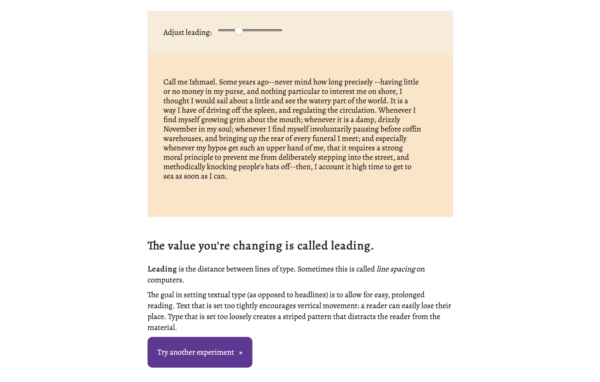
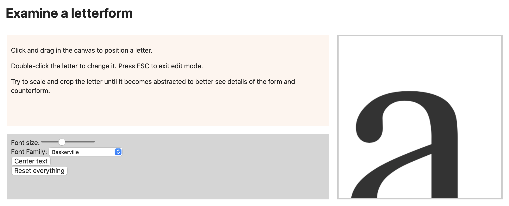

Thesis Update
My thesis to create a prototype of an online learning platform for typography has seen some good progress. I have the interaction elements of two lessons built out.
The first example shows how a student can play with leading using sliders.
The second uses a small canvas element to allow a user to crop a letterform into an abstract object so they can examine the visual form better.
Artist Biography
Gideon Slife was born in Athens, Georgia and is currently based in Hartford, Connecticut. Gideon earned a Bachelor of Fine Arts in Visual Communication from the University of Delaware in 2012 and worked as a front-end web designer for several years. His web designs helped small businesses tell their own stories instead of being simply a brochure for services. After teaching typography and interactive design for a year at the University of Delaware as an adjunct, he now attends the University of Connecticut pursuing a MFA in the Digital Media Design program. Gideon’s work focuses on telling stories with digital design and interaction. His interests lie in using these digital narratives to teach and exploring the ways that interaction design can be used to enhance learning.